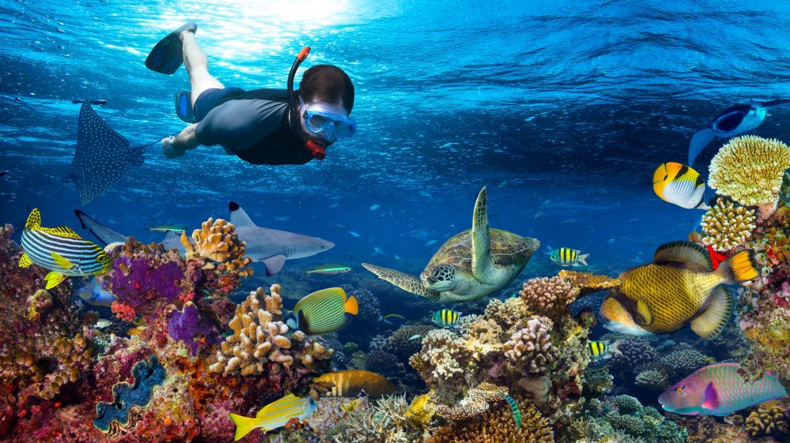
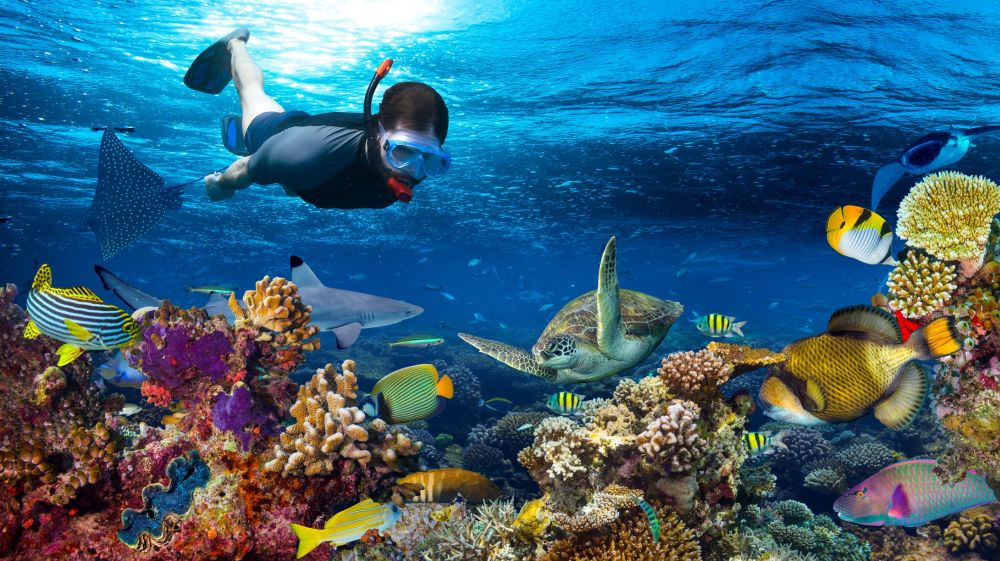

SAFARI BLUE TOUR
Depart from Fumba, which is in the South East of the Island – guests will head on a trip in a traditional wooden dhow, to one of the three snorkelling stopovers to enjoy the unique underwater world of Zanzibar.
On the way, you will hopefully meet dolphins playing around in the shallow Marine Park of Menai Bay, depending on waves, swimming in the mangrove lagoon is one of the activities offered on this tour.
The dhow will then bring you to an island where a seafood buffet will be served with fresh chilled soft drinks and cold beer.
Following the lunch, a tropical fruit tasting will be presented with the chance to savour between 10-15 species of tropical fruits. Coffee will finish this gastronomical sensation. On a short walk into the island’s tropical forest, you will find a 500- year-old baobab tree which 70 years ago was toppled down by a storm; now its former branches continue to grow like trees themselves on top of the huge laid-down former trunk. This tour can be blended with other tours, upon request.
 
